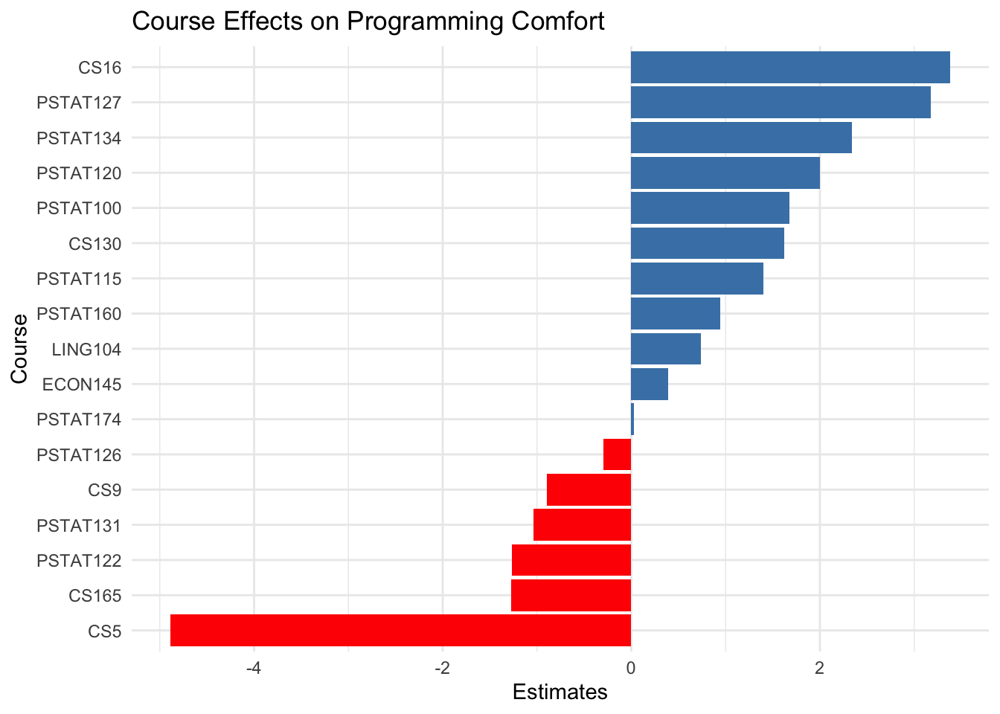

Anna Gornyitzki, Cathy Fang, Johanna Jansen, Joy Chang, Lorretta Lu
Updated
October 19, 2025
Executive summary
In this project, certain university courses were examined to see how closely associated they are with the students’ comfort in programming of PSTAT197A. Using survey data from 60 students, the relationship between programming comfort levels (rated 1-5) and course enrollment across several departments was analyzed. Lorretta’s and Cathy’s portion of the analysis used ordinal logistics regression to compare comfort levels between students who had taken versus not taken each course. This approach identified the top five courses that are most strongly linked to higher programming comfort. The findings of this portion of the analysis suggest that introductory computer science and advanced data science courses have the strongest positive associations with programming comfort, highlighting their potential role in improving students’ confidence and skill development.
Data description
The dataset background-clean.csv contains survey responses from 60 university students aimed at understanding factors associated with programming, statistical, and mathematical comfortability and proficiency. Data were collected through a self-reported questionnaire that asked participants to rate their comfort and proficiency with programming, statistics, and mathematics on a five point scale, with 1 being least comfortable and 5 being most comfortable. Additional variables recorded include course enrollment indicators across several departments, most notably Computer Science, Statistics, Linguistics, and Economics. Each course variable is coded as a binary variable, with 1 having taken the course and 0 having not taken the course before. This data set allows for comparative and inferential analyses.
Question of interest
The analysis aimed to identify which courses were most strongly associated with students’ comfort in programming. Specifically, we addressed the following question:
What are the top five courses that are most associated with higher self-reported programming comfort among students?
Findings
Using ordinal logistics regression, course enrollment patterns were examined to test how it may affect students’ self-reported programming comfort on a 1-5 scale. Among all courses, it appears CS16, PSTAT127, PSTAT134, PSTAT120, and PSTAT100. This suggests that students that complete these courses are substantially more likely to report higher comfort levels in programming.
Code chunks
# Make sure outcome is ordered factorlogistics <- logistics %>%mutate(prog.comf =ordered(prog.comf, levels =c(1, 2, 3, 4, 5)))# Use all courses (keep everything)predictors <-c("PSTAT100","PSTAT115","PSTAT120","PSTAT122","PSTAT126","PSTAT131","PSTAT160","PSTAT174","CS9","CS16","LING104","LING110","LING111","CS130","CS165","ECON145","PSTAT127","PSTAT134","CS5")# Keep only outcome + predictors, drop missing rowslogistics <- logistics %>% dplyr::select(prog.comf, all_of(predictors)) %>%drop_na()# --- 2️⃣ Fit Ordinal Logistic Model (CLM) ---formula <-as.formula(paste("prog.comf ~", paste(predictors, collapse =" + ")))model_clm <-clm(formula, data = logistics, link ="logit")summary(model_clm)
Several functions exist for converting dataframes to markdown tables for nice display. A simple one from the knitr package is knitr::kable() .
Ordinal Logistic Regression Results by Course
Course
Estimate
StdError
CS16
3.381
0.925
PSTAT127
3.173
2.564
PSTAT134
2.342
1.471
PSTAT120
2.002
1.421
PSTAT100
1.674
0.843
Figures
To include any figures not generated by code chunks, use Insert > Figure / Image or  .
Most of the time code chunks producing plots will render fine. However, to adjust sizing or alignment, use the chunk options fig-width and fig-height . Captions can be added with fig-cap .

Links
To include any hyperlinks, use [display text](url) .